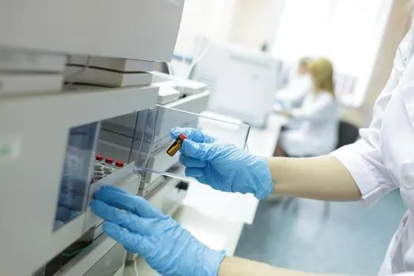
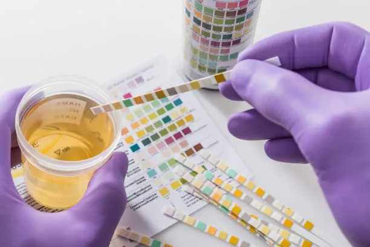
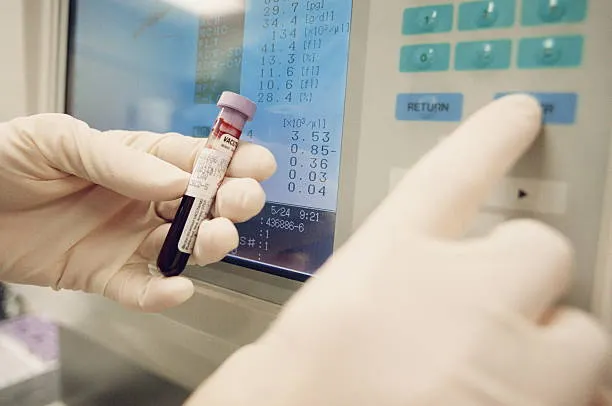

Laboratory Facilities & Hardware System

UroScan Reader Unit

10-Pad Reagent Strip
Pathology Laboratory

Sample Collection Unit
Clinical Importance & Key Advantages
Objective Readings
Eliminates visual reader bias and optical lighting glare through standardized camera RGB color extraction.
Precise Timing
Automates the exact 120-second chemical reaction development window for peak color measurement accuracy.
Early Screening
Rapid point-of-care detection for Diabetes, Kidney Disorders, UTIs, and Liver Dysfunction across 10 analytes.
Portable POC Hardware
Combines Raspberry Pi 5, 12MP camera, and LED illumination enclosure for affordable laboratory deployment.
Point-of-Care Colorimetry Pipeline
1. Strip Insertion
10-Pad Reagent Strip
2. LED Illumination
Uniform Darkroom Chamber
3. Camera Scan
12MP Optical Sensor
4. AI CV Analysis
RGB Color Regression
5. Digital Report
Pathologist Review & Save
10 Analyte Diagnostic Scope
GLU (Glucose): Diabetes mellitus screening
PRO (Protein): Kidney disease & proteinuria
pH: Acid-base metabolic status
KET (Ketones): Diabetic ketoacidosis & starvation
BLO (Blood): Hematuria & renal tract injury
BIL (Bilirubin): Liver disease & bile duct obstruction
URO (Urobilinogen): Liver dysfunction & hemolysis
NIT (Nitrite): Bacterial urinary tract infection
LEU (Leucocytes): Urinary tract inflammation
SG (Specific Gravity): Renal concentrating ability